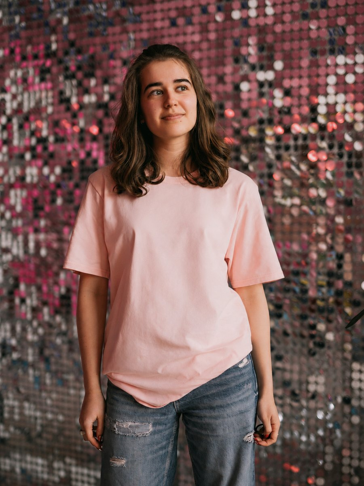

Moving & studying here
If you're considering the move, or you've just arrived
- Choosing an educational path that actually opens doors
- What arriving on your own is really like
- Settling in, ETH, and student life
Hey there!
No family here, no roadmap. Since then I've worked out school, ETH, a change of direction and the Swiss job market as a non-EU national, one decision at a time. If you're standing at one of those decisions, I've probably stood there too.

Currently finishing my Master's at ETH Zürich
My story
Every step was a decision made without a manual. I asked, got it wrong, and tried again.
I moved to Switzerland alone for school. No family in the country, no network, and a language I was still learning to live in.
A Bachelor's in Electrical Engineering & Information Technology, with a thesis on predicting septic shock from digital biomarkers.
Time in startups, venture capital and entrepreneurship. Slowly it became clear that engineering wasn't where I wanted to end up.
I turned toward business and consulting, including an internship at UNITY Consulting & Innovation. I wanted out of engineering, and I went to find out what the alternative actually looked like.
Writing my thesis for a Master's in Management, Technology and Economics at ETH, and working out what comes after it in Switzerland as a non-EU candidate.
None of this came with a manual. Which school. Which degree. Whether to stay in engineering. How to move from engineering into consulting. How to approach the Swiss job market as a non-EU candidate.
I got through all of it by asking people who had done it before me. That is the part I would like to pass on.
How I can help
Wherever you are on the way, one of these is probably your question right now.
If you're considering the move, or you've just arrived
For students and young professionals who aren't sure what comes next
If you're graduating, or graduated, and want to stay
Let's talk
Form not loading? Open it in a new tab